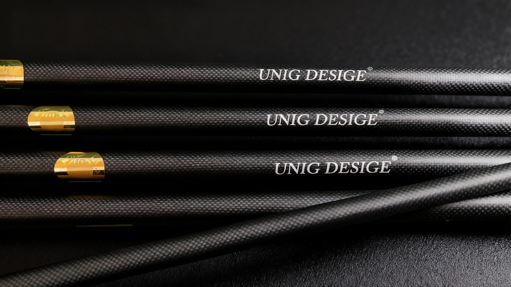
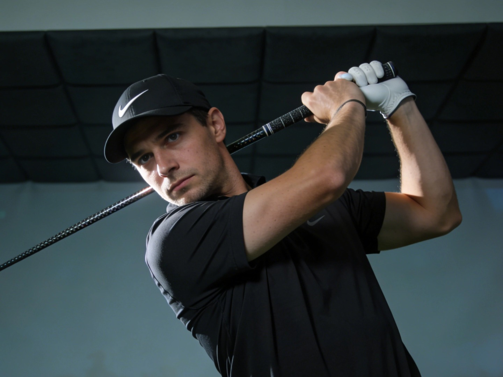

Hoe Ruimtevaart-Koolstofvezel Technologie Golfschacht Prestaties Hervormt
Ontdek hoe UnigDesige Europese ruimtevaart-kwaliteit koolstofvezel technologie toepast in golfschacht design, met 35% hogere torsie sterkte.
Lees volledig artikel →Golftechnologie, materiaaltrends
en professionele inzichten

Ontdek hoe UnigDesige Europese ruimtevaart-kwaliteit koolstofvezel technologie toepast in golfschacht design, met 35% hogere torsie sterkte.
Lees volledig artikel →
Gebaseerd op 5.00 speler data-analyse: hoe wetenschappelijke meting en gepersonaliseerde fitting de optimale golfschacht voor uw swing selecteert.
Lees volledig artikel →